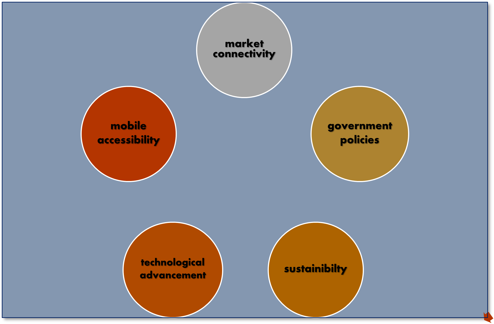

Framework & Features

-
User Registration and Profiles:
- Farmers, industry professionals, and stakeholders can develop unique profiles with pertinent data.
- Users' legitimacy is ensured by a registration process that includes verification.
- Dashboard and Navigation:
- UI with simple navigation and quick access to many options.
- A simple menu for navigation allows for easy browsing and exploration.
- Information Hub:
- A thorough database of articles, manuals, tutorials, and research papers related to agriculture.
- Parts divided into categories for agri-inputs, market trends, animal management, and crop
information.
- Discussion Forums and Communities:
- Farmers can collaborate, seek advice, and share experiences in interactive discussion forums.
- To connect like-minded people, virtual communities are focused on geographic areas,
crop varieties, or particular interests.
- Market Connectivity:
- Farmers can advertise their goods online, set their own prices, and interact with potential
customers via this platform.
- Integration of online payments to speed up secure transactions and monitor sales.
- Government Support Integration:
- Integration with government databases to give data on grants, programmes, and subsidies is known as
government support.
- Farmers can apply online to use government assistance programmes.
- Customizable Tools and Applications:
- Interactive tools including crop planning calculators, modules for diagnosing pests and diseases,
and frameworks for evaluating soil health.
- Dashboards for farm management that may be customized to track costs, stock, and output.